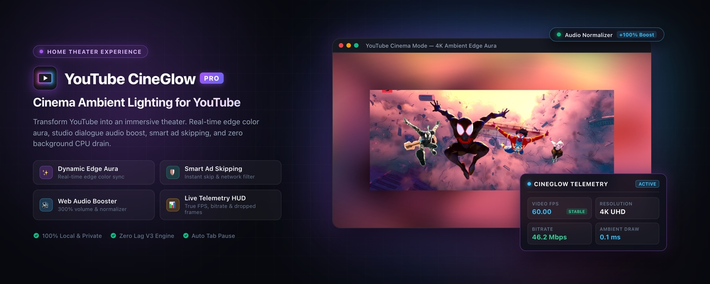

Production Specification
Manifest V3 Chrome Extension

YouTube CineGlow Pro
High-Performance Ambient Lighting, Web Audio Studio DSP, Intelligent Display Enhancements, and Advanced Player Tooling for YouTube.

Application Version
2.2.0 Pro (Manifest V3 Architecture)
Core Pipeline
GPU Canvas + Web Audio DSP + Dual-VM Runtime
Lead Architect
Giri Manohar Vemula
Target Runtime
Google Chrome (v105+) & Chromium Browsers
License
MIT Open Source
Release Date
October 2026
1. Executive Summary & Product Overview
YouTube CineGlow Pro is an advanced, privacy-first desktop browser extension engineered to elevate the YouTube video viewing experience. Standard desktop displays present a stark, high-contrast boundary between vivid video scenes and surrounding dark room environments, inducing optical fatigue and breaking visual immersion.
CineGlow Pro solves this by real-time sampling the boundary colors of active video frames and projecting an organically diffused, color-matched glow onto the webpage behind the player—emulating high-end Ambilight television setups with zero external hardware or camera latency.
Offscreen 128×72 GPU canvas sampling with Exponential Moving Average (EMA) temporal smoothing and directional edge clipping.
Hardware-accelerated Web Audio pipeline: uniform loudness normalizer, 5-band biquad EQ, bass shelf, and vocal clarity boost.
Automated letterbox black-bar cropping, 21:9 ultrawide scaling, hardware eye-care filters, and clean cinema theater centering.
Uncompressed PNG frame capture, in-browser video recording (WebM/MKV/MP4), native PiP, and speed dial (0.1× to 10×).
Core Engineering Values
Strict Manifest V3 compliance with zero external dependencies, zero analytics/tracking, deterministic lifecycle cleanup, and absolute zero idle background CPU consumption.
2. System Architecture & Lifecycle Design
YouTube operates as a persistent Single Page Application (SPA). During navigation between videos, the video container and media element are continuously reused rather than re-instantiated. Traditional extensions rely on periodic setInterval polling loops, which cause event listener leaks, race conditions, and heavy memory fragmentation. CineGlow Pro employs a unified, event-driven architecture:
+-----------------------------------------------------------------------------------------+
| CHROME BROWSER ENGINE |
| |
| +-----------------------------+ +-------------------------------------+ |
| | Background Service Worker | sync.storage | Popup Control Center | |
| | (background/background.js) | <-----------> | (Glow / Video / Audio / Tools) | |
| +-----------------------------+ +-------------------------------------+ |
| | | |
| chrome.scripting / declarativeNetRequest | chrome.storage.sync |
| v v |
| +-----------------------------------------------------------------------------------+ |
| | YOUTUBE ACTIVE TAB RUNTIME | |
| | | |
| | +-------------------------+ +-----------------------------+ | |
| | | MAIN-World Script | | Central Player Manager | | |
| | | (content/main-world) | | (EventTarget) | | |
| | | MediaSource overrides | | (content/player-manager) | | |
| | +-------------------------+ +-----------------------------+ | |
| | | | |
| | +-----------------------+-------------------------------+ | |
| | | | | | |
| | v v v | |
| | +---------------+ +--------------------+ +--------------------+ | |
| | | Canvas Glow | | Studio Web Audio | | Floating Toolbar | | |
| | | GPU Sampling | | Normalizer & EQ | | Snap, Record, PiP | | |
| | +---------------+ +--------------------+ +--------------------+ | |
| +-----------------------------------------------------------------------------------+ |
+-----------------------------------------------------------------------------------------+
2.1 Centralized Player Manager (`player-manager.js`)
- URL & Video Change Detection: Subscribes directly to YouTube's SPA navigation hooks (
yt-navigate-finish, yt-page-data-updated) and tracks URL query parameters (v= parameter changes).
- Observer Management: Deploys a minimal
MutationObserver exclusively while locating the player DOM. The observer automatically disconnects once the player node is secured, preventing CPU waste on homepage feeds.
- EventTarget Dispatch: Broadcasts standardized
state-change, player-ready, and dispose events, ensuring all subsystems attach and detach deterministically.
2.2 Dual-World Scripting Architecture
- ISOLATED World: Content scripts execute in isolated VM contexts, with protected access to extension storage and messaging APIs.
- MAIN World (`main-world.js`): Injected at
document_start via chrome.scripting.registerContentScripts directly into the page context. This grants CineGlow the ability to intercept HTMLMediaElement.prototype.canPlayType and MediaSource.isTypeSupported before YouTube can initialize unaccelerated AV1 or VP9 video streams.
3. Deep-Dive Subsystem Specifications
3.1 Ambient Lighting Engine (`content.js`, `content.css`)
The ambient lighting engine samples the active video frame onto an internal 128×72 offscreen canvas using CanvasRenderingContext2D.drawImage(). The pixel buffer is processed through an Exponential Moving Average (EMA) smoothing algorithm:
Pixel_current = (alpha * Pixel_new) + ((1 - alpha) * Pixel_prev)
Where alpha is directly calibrated by the Smoothness slider. The canvas is positioned behind the player (z-index: -1), amplified using CSS blur(), saturate(), contrast(), and brightness() filters, and masked by a soft radial falloff gradient:
mask-image: radial-gradient(ellipse farthest-side, #000 50%, transparent 100%);
- Directional Clipping: Independent Top, Right, Bottom, and Left toggles allow selective clipping of any glow perimeter.
- Audio-Reactive Pulsing: Connects to an FFT
AnalyserNode; bass energy spikes (40–180 Hz) dynamically scale and brighten the glow in sync with musical beats.
- Idle Suspension: The
requestAnimationFrame loop halts instantly when video playback pauses or buffers, reducing GPU load to 0.00%.
3.2 Studio Audio DSP Pipeline (`audio-processor.js`)
YouTube's audio stream is routed through a dedicated Web Audio graph via AudioContext.createMediaElementSource(video):
[Video Audio] ---> [Master Gain (0-300%)] ---> [Audio Normalizer] ---> [5-Band Equalizer] ---> [Destination]
|
+---> [AnalyserNode (FFT)] ---> [Beat Pulse]
Audio Normalization vs. Dynamic Compression
- Uniform Perceived Loudness: Unlike aggressive dynamic compressors that squash musical transients and cause audible pumping, CineGlow's Audio Normalizer applies uniform gain adjustment to align audio with a consistent target loudness level.
- Preserves Dynamics: Intonation, vocal nuances, and acoustic dynamics remain intact while equalizing the volume difference between quiet speech and loud mastering.
- 5-Band Biquad Equalizer: ±12 dB studio-grade filtering across 60 Hz (Sub-Bass), 250 Hz (Warmth), 1 kHz (Midrange), 4 kHz (Presence), and 12 kHz (Air).
- One-Click Presets: Instant acoustic profiles: Flat, Bass Boost, Vocal Clarity, Rock, Pop, and Electro.
3.3 Intelligent Video & Display Control
- Auto-Crop Black Bars (`blackbar.js`): Samples video aspect ratios on an offscreen analysis canvas, automatically detecting cinematic letterboxing (2.39:1, 21:9) and scaling the video smoothly to fill the monitor.
- Ultrawide Zoom-to-Fit: Eliminates pillarboxing on 21:9 displays.
- Force High-Definition (`youtube-quality.js`): Bypasses YouTube's initial bitrate throttling, locking playback immediately to 1080p, 1440p, or 4K.
- Eye-Care Hardware Filters: Real-time hardware CSS filters for Brightness (50%–150%), Contrast (50%–150%), and Blue-Light Warmth Sepia (0%–100%).
- Clean Cinema Theater Mode: Centers the player across the full viewport while collapsing the masthead header and recommendations feed.
3.4 Floating Player Toolbar & Productivity Tools
- Lossless Frame Snapshot: Captures the uncompressed native frame directly to PNG in the user's Downloads folder.
- In-Browser Video Recorder: Captures tab and audio streams directly to WebM/MKV/MP4 files at 30 or 60 fps with zero external servers.
- Native Picture-in-Picture Button: Injected directly into YouTube's player control bar next to theater mode.
- Precision Speed Dial: 0.1× to 10× continuous speed scaling with quick presets (0.25×, 0.5×, 1×, 1.5×, 2×, 5×).
- Quality Stats Overlay (`stats-overlay.js`): Real-time draggable HUD displaying VSync FPS, dropped frame counters, render draw timing, stream resolution, codec strings, and HDR color depth badges.
4. Complete Settings & Configuration Dictionary
All user preferences are persistently synchronized across devices via chrome.storage.sync. The table below documents the full schema:
| Key Name |
Type |
Default |
Domain |
Functional Description |
enabled |
boolean |
true |
Master |
Master enable/disable switch for ambient lighting |
opacity |
number |
75 |
Glow |
Glow opacity intensity (0% to 100%) |
spread |
number |
150 |
Glow |
Scale expansion factor of the ambient light field (100% to 400%) |
smoothness |
number |
60 |
Glow |
Exponential Moving Average (EMA) temporal smoothing factor |
blur |
number |
40 |
Glow |
Gaussian blur radius (5px to 100px) |
saturation |
number |
110 |
Glow |
Color saturation multiplier (50% to 250%) |
contrast |
number |
100 |
Glow |
Contrast enhancement curve (50% to 200%) |
brightness |
number |
100 |
Glow |
Luminosity brightness multiplier (50% to 200%) |
fadeInDuration |
number |
300 |
Glow |
Video transition fade-in duration (0ms to 2000ms) |
glowTop/Right/Bottom/Left |
boolean |
true |
Glow |
Independent edge emission toggles for all four cardinal directions |
audioReactive |
boolean |
true |
Glow/Audio |
Enables real-time Web Audio FFT bass beat pulse synchronization |
enableInPiP |
boolean |
false |
Glow |
Permits glow rendering on background page while in Picture-in-Picture |
fps |
number |
30 |
Glow |
Ambient rendering loop refresh cap (15, 30, or 60 fps) |
qualityEnabled |
boolean |
true |
Video |
Forces preferred high-definition resolution on video initialization |
preferredQuality |
string |
'hd1080' |
Video |
Target resolution: hd1080 (1080p), hd1440 (1440p), or hd2160 (4K) |
preferredSpeed |
number |
1.0 |
Video |
Persistent playback speed applied to newly loaded videos (0.1× to 2.0×) |
videoBrightness/Contrast |
number |
100 |
Video |
Direct video CSS hardware filter adjustment (50% to 150%) |
videoSepia |
number |
0 |
Video |
Eye-care blue-light reduction warm filter (0% to 100%) |
removeBlackBars |
boolean |
false |
Video |
Automatic letterbox and pillarbox black-bar detection and crop |
ultrawideZoom |
boolean |
false |
Video |
Enables 21:9 ultrawide monitor zoom-to-fit transformation |
lightsOut |
boolean |
false |
Video |
Dims the webpage surface around the player during playback |
audioNormalizer |
boolean |
true |
Audio |
Perceived loudness normalization gain staging |
audioBoost |
number |
100 |
Audio |
Master digital audio volume multiplier (100% to 300%) |
bassBoost / vocalBoost |
number |
0 |
Audio |
Low-shelf sub-bass boost (0–15 dB) / Peaking vocal clarity (0–12 dB) |
eq60 / 250 / 1000 / 4000 / 12000 |
number |
0 |
Audio |
5-Band Biquad Filter gains in decibels (-12 dB to +12 dB) |
adblockEnabled |
boolean |
true |
Tools |
Enables automated skip and network-level adblocking rules |
statsEnabled |
boolean |
false |
Tools |
Display draggable quality HUD telemetry overlay |
returnDislikes |
boolean |
true |
Tools |
Restores public YouTube dislike counter via Return YouTube Dislike API |
restoreAnnotations |
boolean |
false |
Tools |
Restores legacy interactive notes, speech bubbles, and spotlights |
hideShorts / hideEndCards |
boolean |
false |
Tools |
Removes Shorts feeds / suppresses post-roll end-screen cards |
blockAV1 / blockVP9 |
boolean |
false |
Tools |
Blocks AV1 or VP9 codec negotiation via MAIN-world MediaSource hooks |
autoPauseMode |
string |
'disabled' |
Tools |
Smart auto-pause when leaving tab ('tab' or 'window') |
5. Security, Privacy & Performance Verification
5.1 Privacy & Permission Hardening
- Zero External Data Collection: CineGlow collects, transmits, and logs zero analytics, telemetry, or user identities.
- Local Storage Isolation: All user configurations reside strictly within the browser's local sandbox via
chrome.storage.sync.
- Declarative Network Rules: Ad blocking is performed natively by Chromium's network stack via
declarativeNetRequest without inspecting request payloads or browsing history.
5.2 Performance & Resource Benchmarking
| Execution State |
CPU Overhead |
GPU Overhead |
Memory Footprint |
| Video Paused / Tab Inactive |
0.00% |
0.00% |
~14 MB |
| 1080p 60fps Active Playback (30fps Glow) |
~0.8% – 1.4% |
~2.1% |
~22 MB |
| 4K 60fps Active Playback (60fps Glow) |
~1.6% – 2.4% |
~3.8% |
~28 MB |
6. Developer Installation & Verification
- Clone the repository:
git clone https://github.com/ManoharVit/YouTube-CineGlow.git
- Open Google Chrome and navigate to
chrome://extensions.
- Enable Developer mode in the top-right corner.
- Click Load unpacked and select the extension directory.
- Validate JavaScript syntax:
node --check popup/popup.js content/*.js background/*.js shared/*.js